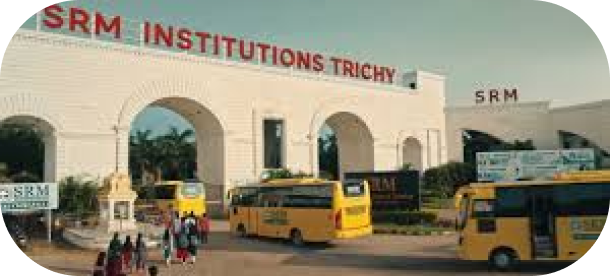

SRMIST Tiruchirapalli’s incrideble asset is cutting
edge infrastucture, which provides students A to
Z facilities
Admissions Open 2025-26 · Admissions Open 2025-26 · Admissions Open 2025-26 ·
SRM Institute of Science and Technology (SRMIST), formerly SRM University, is a private deemed university, located in Kattankulathur, Chengalpattu (near Chennai), Tamil Nadu, India. Founded in 1985 as SRM Engineering College in Kattankulathur, it gained the deemed University status in 2002. SRM Institute of Science and Technology is spread across five campuses — Kattankulathur, Ramapuram, Vadapalani,(all in Chennai), Ghaziabad and Tiruchirappalli. Those are all same University as per section 3 of University Grants Commission Act, 1956. It has three sister universities in Andhra Pradesh, Haryana and Sikkim.
XQ42+PQ8 SRM Nagar, Chennai - Trichy Hwy, Dist, Irungalur, Tamil Nadu 621105
